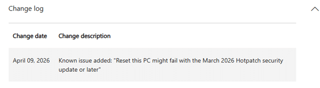
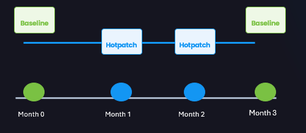
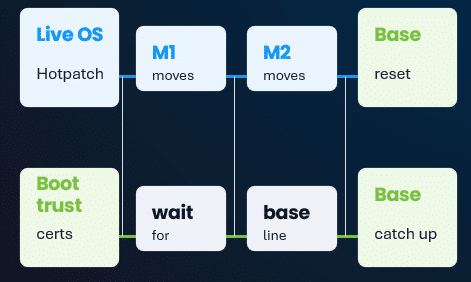

A while ago, I wrote about hotpatch updates and why the story felt a bit too clean. Fewer reboots, faster security fixes, less disruption. On paper, it is hard to argue with that. But the moment Microsoft announced that hotpatch would be enabled by default for eligible Windows Autopatch devices starting with the May 2026 security update, the whole conversation changed for me.

The moment hotpatch updates become the default, most people stop asking what it really changes underneath the hood. And now Microsoft has done something important. It has officially documented the exact kind of issue that made me nervous in the first place.
The Hotpatch Updates “Reset this pc” Issue
In the March 10, 2026 hotpatch article for KB5079420, Microsoft states that Windows Autopatch managed commercial devices with hotpatch enabled can fail during Push Button Reset.


After the first phase of the offline reset, the device can restart back to the desktop and show the message, “There was a problem resetting your PC. No changes were made.”

If you want to know more about what happened during the reset and why it broke, check out our upcoming patch n rant! (it’s coming!)… here is a small teaser in the meantime!

Microsoft also lists a mitigation, the March Safe OS Dynamic Update KB5079471, and notes that this update only needs to be applied once. That matters because this is no longer a theory built on log analysis alone. It is no longer a weird edge case that only showed up in my own testing or on reddit. Microsoft has now placed it directly in the release notes of the hotpatch update itself, for Windows 11 version 25H2 and 24H2.
Why this matters more than the reset error itself
The reset failure is the visible part. The more interesting part is what it tells us about hotpatch. Microsoft’s own hotpatch documentation is already very clear about the update rhythm. January, April, July, and October are baseline months that require a restart. The months in between are the hotpatch months.


And if a device is not on the latest baseline update, Windows can still apply both the latest baseline update and the latest hotpatch update. That alone tells you hotpatch is not replacing the normal servicing model. It is sitting on top of it.
That is exactly why I have never been fully comfortable with the simplified version of the hotpatch story. Hotpatch can move the OS security fixes forward faster, yes. But that does not mean every other part of the platform moves forward at the same pace. The baseline still matters. The reboot still matters. The broader servicing state still matters. And the moment recovery depends on that servicing state, you stop talking about convenience and start talking about platform consistency.
Hotpatch Updates and the Secure Boot Certificates
The same March 2026 hotpatch article also contains another detail that should make people slow down a bit. Microsoft explicitly says that Secure Boot certificate updates will be delivered with the next baseline Windows update in April 2026, NOT with the hotpatch month itself.

In the same article, Microsoft also reminds customers that Secure Boot certificates used by most Windows devices start expiring from June 2026. It confirms the bigger point in one sentence. Hotpatch can move one part of Windows forward, while another important part still waits for the baseline month.


So yes, a device may look current from a hotpatch point of view. It may have the latest security fixes for the OS. But that still does not mean the entire platform has moved forward as one block. The Secure Boot certificate path is one example. The reset issue is another. And both are sitting in the same official article.
This is the part people need to be aware of
I am NOT saying hotpatch is bad. I am saying hotpatch is narrower than the marketing pitch makes it sound. That is a very important difference.
If you run devices where uptime really matters, hotpatch makes a lot of sense. But when Microsoft enables it by default for eligible Windows Autopatch devices, the risk is that people stop treating it like a servicing choice and start treating it like a harmless checkbox.

It is not. It changes the way monthly servicing progresses on the device. And once the device has to recover, reset, or rely on components still tied to the baseline path, those differences stop being theoretical.
That is really why this follow-up blog matters. The earlier conversation around hotpatch could still be framed as a debate about caution. This one cannot. Microsoft has now documented the push button reset failure itself, documented the mitigation, and in the same breath reminded everyone that Secure Boot certificate updates still wait for the next baseline.
That is the story. Not that hotpatch is broken everywhere. Not that nobody should use it. But that reducing reboots is not the same thing as reducing complexity.
My take on Hotpach
If hotpatch is about to become the default, reset testing should also be part of the conversation. And Secure Boot certificate planning definitely also needs to be part of the conversation now that Microsoft has already pointed to April 2026 as the next baseline moment for those updates, while the certificate expiration window starts in June 2026. So no, I would not panic (or maybe a bit?). But I also would NOT just let hotpatch quietly be turned on by default and assume it is nothing more than a nice way to avoid reboots.

Microsoft has now shown us, in its own documentation, that hotpatch can affect more than the monthly update experience. It can also show up in the exact moment you need the device to recover cleanly.